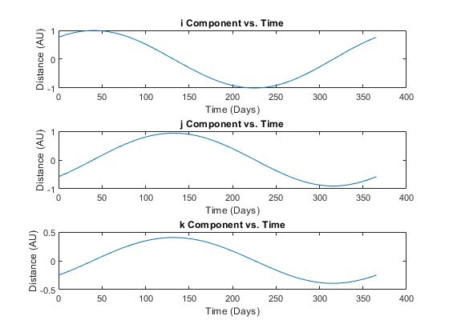
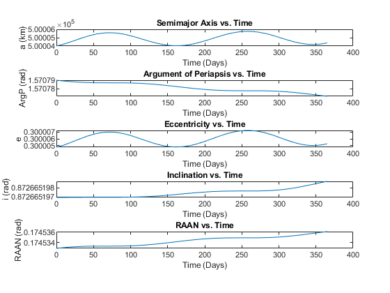
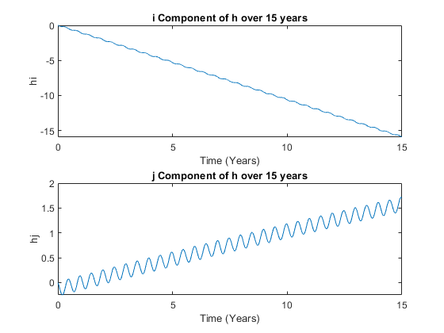

Contents
Problem 3
re = 0;
rs = 6600:100:50000;
rsun = 149.6E6;
rm = 384.4E3;
musun = 1.327E11;
mum = 4.902E3;
atbsun = musun.*((1./(rsun - rs).^2)-(1/(rsun - re).^2));
atbm = mum.*((1./(rm - rs).^2)-(1/(rm - re).^2));
atbtot = atbsun + atbm;
atbtot = atbtot*1000;
figure(1);
plot(rs, atbtot)
xlabel('Spacecraft distance in km')
ylabel('Third Body Perturbation in m/s^2')
disp('The moon has a stronger perturbation than the sun.');
The moon has a stronger perturbation than the sun.

Problem 4
jdutc = 2451545.0;
jdut1 = jdutc2jdut1(jdutc, 0);
Tut1 = ((jdut1 - 2451545)/36525);
mel = 280.460 + 36000.771*Tut1;
ma = 357.52772333 + 35999.0534*Tut1;
el = mel + 1.914666471*sin(deg2rad(ma)) + 0.019994643*sin(deg2rad(2*ma));
r = 1.000140612 - 0.016708617*cos(deg2rad(ma)) - 0.000139589*cos(2*deg2rad(ma));
obe = 23.439291 - 0.0130042*Tut1;
rtod = [r*cos(deg2rad(el)) r*cos(deg2rad(obe))*sin(deg2rad(el)) r*sin(deg2rad(obe))*sin(deg2rad(el))]';
rmod = rtod;
zeta = 206.2181*Tut1 + 0.30188*(Tut1^2) + 0.017998*(Tut1^3);
theta = 2004.3109*Tut1 - 0.42665*(Tut1^2) - 0.041833*(Tut1^3);
z = 2306.2181*Tut1 + 1.09468*(Tut1^2) + 0.018203*(Tut1^3);
zeta = zeta / 3600;
theta = theta / 3600;
z = z / 3600;
Qtodgcrf = R3(deg2rad(zeta))*R2(deg2rad(-theta))*R3(deg2rad(z));
rgcrf = Qtodgcrf*rmod;
disp('This is the GCRF position of the Sun at 2457793.5 UTC:');
disp(rgcrf);
clear all
clc
jdutc = 2457793.5:0.25:(2457793.5+365.25);
prop = zeros(3,length(jdutc));
for i = 1:length(jdutc)
prop(1:3,i) = sun(jdutc(i));
end
t = jdutc - 2457793.5;
figure(2);
subplot(3,1,1)
plot(t, prop(1,:))
title('i Component vs. Time')
xlabel('Time (Days)')
ylabel('Distance (AU)')
hold on
subplot(3,1,2)
plot(t, prop(2,:))
title('j Component vs. Time')
xlabel('Time (Days)')
ylabel('Distance (AU)')
subplot(3,1,3)
plot(t, prop(3,:))
title('k Component vs. Time')
xlabel('Time (Days)')
ylabel('Distance (AU)')
This is the GCRF position of the Sun at 2457793.5 UTC:
0.1771
-0.8874
-0.3847

Problem 5
clear all
clc
r = [39066 221558 268116];
v = [-1.19828 0.211289 0];
mu = 398600;
time = 2451545:0.5:(2451545+365.25);
odeoptions = odeset('RelTol', 1e-10,'AbsTol',1e-20);
y0 = [r v]';
[T,Y] = ode45(@threebodysun,time,y0,odeoptions);
r = Y(:,1:3);
v = Y(:,4:6);
for j = 1:length(Y)
[a(j),emag(j),i(j),raan(j),argp(j),ta(j)] = rv2oe(r(j,:),v(j,:),mu);
end
time = time - 2451545;
figure(3);
subplot(5,1,1)
plot(time, a)
title('Semimajor Axis vs. Time')
xlabel('Time (Days)')
ylabel('a (km)')
hold on
subplot(5,1,2)
plot(time, argp)
title('Argument of Periapsis vs. Time')
xlabel('Time (Days)')
ylabel('ArgP (rad)')
subplot(5,1,3)
plot(time, emag)
title('Eccentricity vs. Time')
xlabel('Time (Days)')
ylabel('e')
subplot(5,1,4)
plot(time, i)
title('Inclination vs. Time')
xlabel('Time (Days)')
ylabel('i (rad)')
subplot(5,1,5)
plot(time, raan)
title('RAAN vs. Time')
xlabel('Time (Days)')
ylabel('RAAN (rad)')

Extra Credit
clear all
clc
r = [39066 221558 268116];
v = [-1.19828 0.211289 0];
mu = 398600;
time = 2451545:0.5:(2451545+(15*(365.25)));
odeoptions = odeset('RelTol', 1e-10,'AbsTol',1e-20);
y0 = [r v]';
[T,Y] = ode45(@threebodysun,time,y0,odeoptions);
r = Y(:,1:3);
v = Y(:,4:6);
h = cross(r,v);
time = (time - 2451545)/365.25;
figure(4);
subplot(2,1,1)
plot(time,(h(:,1) - h(1,1)))
xlabel('Time (Years)')
ylabel('hi')
title('i Component of h over 15 years')
hold on
subplot(2,1,2)
plot(time,(h(:,2) - h(1,2)))
xlabel('Time (Years)')
ylabel('hj')
title('j Component of h over 15 years')
